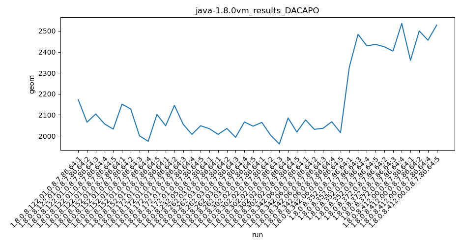
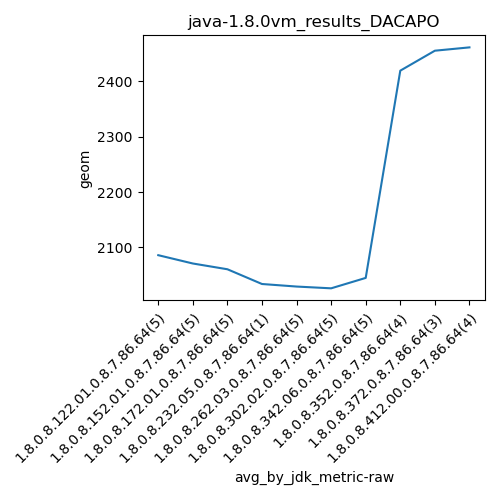
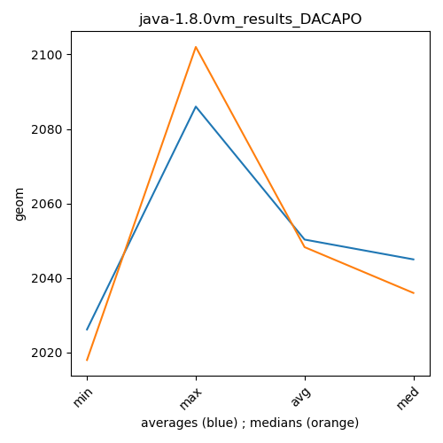

java-1.8.0 DACAPO
Context at bottom
/home/jvanek/git/benchmarks-in-nested-virtualisation-toolchain/final_results/vm_results/vm_results_RADARGUNs1
java-1.8.0
DACAPO
/home/jvanek/git/benchmarks-in-nested-virtualisation-toolchain/final_results/vm_results/vm_results_RADARGUNs3
java-1.8.0
DACAPO
/home/jvanek/git/benchmarks-in-nested-virtualisation-toolchain/final_results/vm_results/vm_results_DACAPO
java-1.8.0
DACAPO
vm_results_DACAPO
final score
Expected number of java-1.8.0 JDKs: 10
1st avgmed_alljdks_metric:
/home/jvanek/git/benchmarks-in-nested-virtualisation-toolchain/final_results/result_processing.py /home/jvanek/git/benchmarks-in-nested-virtualisation-toolchain/final_results/vm_results/vm_results_DACAPO geom False
values: [2172, 2065, 2104, 2057, 2032, 2151, 2128, 2000, 1974, 2102, 2048, 2145, 2055, 2007, 2048, 2034, 2007, 2035, 1993, 2066, 2046, 2064, 2003, 1961, 2085, 2018, 2076, 2031, 2036, 2067, 2015, 2327, 2484, 2429, 2436, 2425, 2404, 2536, 2360, 2500, 2456, 2528]

Expected number of iterations: 5
final number of values: 42 out of 50
Pass rate: 84.0%
values: (1961, 2536, 2155.0, 2066)

** accuracy from all jdks and runs
more is better
MIN: 1961
MAX: 2536
AVG: 2155.0
MED: 2066
Relative differences 1:
MIN-MAX: 23.0 %
MIN-AVG: 9.0 %
MIN-MED: 5.0 %
MAX-MIN: -29.0 %
MAX-AVG: -18.0 %
MAX-MED: -23.0 %
AVG-MED: -4.0 %
stored to java-1.8.0.properties. sort | uniq that!
2nd avgmed_by_jdk_metric:
values: [2086.0, 2071.0, 2060.6, 2034.0, 2029.4, 2026.2, 2045.0, 2419.0, 2455.0, 2461.0]

values: [2065, 2102, 2048, 2034, 2035, 2018, 2036, 2436, 2425, 2500]

values: (2026.2, 2461.0, 2168.7200000000003, 2071.0)
values: (2018, 2500, 2169.9, 2065)

** accuracy from all jdks where runs were avged
more is better
MIN: 2026.2
MAX: 2461.0
AVG: 2168.7200000000003
MED: 2071.0
Relative differences 1:
MIN-MAX: 18.0 %
MIN-AVG: 7.0 %
MIN-MED: 2.0 %
MAX-MIN: -21.0 %
MAX-AVG: -13.0 %
MAX-MED: -19.0 %
AVG-MED: -5.0 %
stored to java-1.8.0.properties. sort | uniq that!
** accuracy from all jdks where runs were medianed
more is better
MIN: 2018
MAX: 2500
AVG: 2169.9
MED: 2065
Relative differences 1:
MIN-MAX: 19.0 %
MIN-AVG: 7.0 %
MIN-MED: 2.0 %
MAX-MIN: -24.0 %
MAX-AVG: -15.0 %
MAX-MED: -21.0 %
AVG-MED: -5.0 %
stored to java-1.8.0.properties. sort | uniq that!
/home/jvanek/git/benchmarks-in-nested-virtualisation-toolchain/final_results/vm_results/vm_results_J2DBENCH
java-1.8.0
DACAPO
/home/jvanek/git/benchmarks-in-nested-virtualisation-toolchain/final_results/vm_results/vm_results_SPECJBB
java-1.8.0
DACAPO
/home/jvanek/git/benchmarks-in-nested-virtualisation-toolchain/final_results/vm_results/vm_results_JMH
java-1.8.0
DACAPO
pass rates:
vm_results_DACAPO=84.0%
Context:
- vm_results
- DACAPO